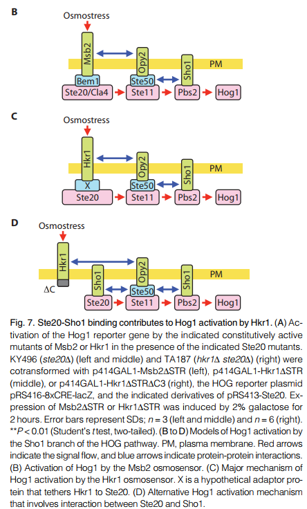
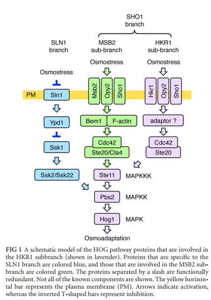
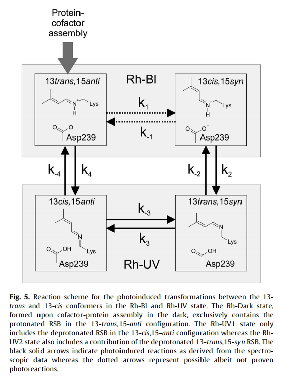
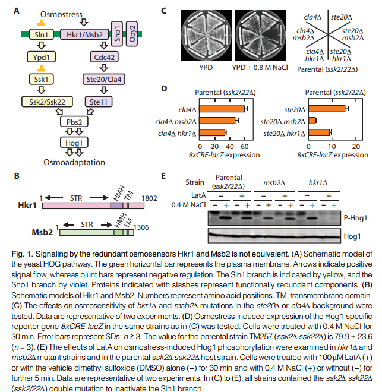

 HKR1激活Hog1的机理 |
HKR1（Histidine kinase rhodopsin 1）即组氨酸激酶视紫红质，是一种受光调节的受体组氨酸激酶。它用质子化视网膜希夫碱 (RSB) 辅因子在紫外线吸收状态 (Rh-UV) 和蓝色吸收状态 (Rh-Bl) 之间切换，通过在 13-trans,15-anti 和 13-cis,15 混合物之间切换同分异构体实现。 除此之外，HKR1本身作为一种细胞膜表面受体，属于一种MAPKKK→MAPKK→MAPK通路的起始蛋白质，此处的MAPK是hog1蛋白，目前的研究已表明，HKR1激活hog1蛋白的途径是一种与Msb2激活hog1蛋白相对独立的途径。 |
参考文献: |
|
参考网站： 泛癌分析：http://gepia.cancer-pku.cn/detail.php?gene=hkr1 人体各器官组织表达情况：https://www.proteinatlas.org/ENSG00000181666-HKR1/tissue |
|
 HKR1激活Hog的完整途径 |
|
 Hkr1在两种不同状态之间转化 |
|
 构造基因敲除酵母系进行微生物实验初步表明Msb2与Hkr1激活Hog1属于不同途径 |